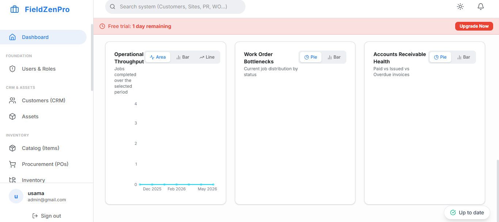

The ultimate goal of every service business owner is to build an operation that runs smoothly whether or not they are personally present. The business that is entirely dependent on the owner being in the office, making every scheduling decision, answering every customer question, and reviewing every invoice is not a scalable business—it is a high-stress job with overhead.
Building an operation that runs itself requires more than great people. It requires a field service management system (FSMS) that institutionalizes the operational intelligence currently residing only in the owner's head. This means encoding the best-practice decision logic for dispatching, customer communication, invoice generation, and quality control into automated workflows that execute perfectly every time—without requiring a human to initiate them.
This article explores the architectural principles behind a self-running field service management system and the specific components that must be in place for your operation to function at its highest level without constant manual intervention.

A useful benchmark for evaluating your current system maturity is what we call the Owner Independence Test: if you were completely unreachable for five working days, would your operation continue to function smoothly? Would customers still receive professional appointment reminders? Would technicians still receive their daily schedules? Would invoices still go out and payments still be collected?
If the honest answer is "no" or "not reliably," you do not yet have a field service management system—you have a collection of people and tools that depend on your continuous intervention to function. The goal is to build a system where the answer is a confident "yes."
"A true field service management system is one that produces excellent operational outcomes as a result of well-designed processes and automated workflows—not as a result of any single person's heroic effort."
Everything begins with complete, accurate customer and equipment data. A self-running system cannot function without a reliable customer database that captures every piece of information needed to serve each customer correctly: contact details, equipment records, service history, time window preferences, and communication preferences. This database is the foundation upon which every other automated process depends.
A self-running system captures new service requests without requiring a human to answer the phone and manually enter a job. This means online booking portals that allow customers to self-schedule, SMS keyword booking triggers ("Text SERVICE to [number]"), and web chat integrations that convert conversations into work orders. Demand capture that runs 24/7, even when your office is closed, ensures that revenue opportunities are never missed.
Once demand is captured, the scheduling engine applies your pre-configured business rules to assign the job to the most appropriate technician: matching skills, geographic proximity, current workload, and inventory availability. In a fully mature implementation, routine maintenance jobs are scheduled and dispatched automatically based on contract rules, requiring dispatcher intervention only for exception cases.
The communication layer runs entirely on autopilot. Confirmation emails go out immediately upon booking. SMS reminders fire 24 hours before the appointment. "En route" notifications deploy when the technician taps the button on their app. Post-job review requests send two hours after completion. Invoice emails with payment links go out the moment the job is marked complete. Every customer touchpoint is handled automatically, consistently, and professionally.
Invoices generate automatically from completed work orders. Payment reminders send automatically for unpaid invoices at day 7 and day 14. Received payments sync automatically to your accounting software. Monthly service contract invoices generate and send automatically on the first of each month. The entire cash flow cycle—from job completion to payment reconciliation—requires zero manual intervention.
One way to quantify your progress toward a self-running FSMS is to calculate your "Automation Coverage Score": the percentage of your total weekly administrative actions that are now handled by automated workflows rather than manual human effort. A business at 0% automation coverage is entirely dependent on human labor for every customer communication, every invoice, every reminder. A business at 80%+ automation coverage has achieved the Owner Independence benchmark—the system handles the routine, and humans focus exclusively on exceptions and relationship-building.
FieldZenPro's platform is architecturally designed to support the five-layer FSMS model. Online booking, intelligent scheduling, automated communication, and touchless invoicing are all native capabilities that can be configured and activated progressively as your operational maturity grows. Start with the layers that deliver the most immediate ROI and build toward full automation coverage over time.
Implement all five layers of a self-running field service management system with FieldZenPro.
Start Your 14-Day Free Trial